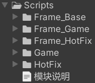
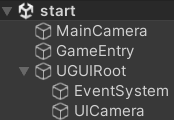
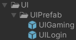

简述
对于该框架，简单看一下项目目录即可知道其复杂度
整体来说是非常复杂的，包括热更/混淆代码/HybridCLR等各种技术
其代码目录结构如下：

模块说明中提到：
- Frame_Base是项目的最基层，与项目无关，是一些宏和仅编辑器代码
- Frame_Game/Frame_HotFix是更高一层，是项目相关内容
- Game/HotFix是应用层内容
- HotFix代表着可热更
- 依赖关系有：
- Frame_Base->Frame_Game->Game->HotFix
- Frame_Base->Frame_HotFix->HotFix
可以看到该框架完全由asmdef完成，没有将Frame部分分层到dll中
框架
从上述简述我们也能够了解到其结构
根据示例项目start：

即：
也就是说该项目做到了唯一入口，显然这是很好的一件事
GameEntry
先看一下GameEntry的继承链：public class GameEntryDerived : GameEntrypublic class GameEntry : MonoBehaviour
这其实是显而易见的一条继承链
GameEntry是实现的核心，其中生命周期是最关键的：
protected static GameEntry mInstance;
public FramworkParam mFramworkParam;
protected IFramework mFrameworkAOT;
protected IFramework mFrameworkHotFix;
public virtual void Awake()
{
mInstance = this;
ServicePointManager.DefaultConnectionLimit = 200;
Screen.sleepTimeout = SleepTimeout.NeverSleep;
// 每当Transform组件更改时是否自动将变换更改与物理系统同步
Physics.simulationMode = SimulationMode.Script;
Physics.autoSyncTransforms = true;
AppDomain.CurrentDomain.UnhandledException += unhandledException;
setMainThreadID(Thread.CurrentThread.ManagedThreadId);
dumpSystem();
WINDOW_MODE fullScreen = mFramworkParam.mWindowMode;
if (isEditor())
{
// 编辑器下固定全屏
fullScreen = WINDOW_MODE.FULL_SCREEN;
}
else if (isWindows())
{
// windows下读取配置
//// 设置为无边框窗口,只在Windows平台使用,由于无边框的需求非常少,所以此处不再实现,如有需求
//if (fullScreen == WINDOW_MODE.NO_BOARD_WINDOW)
//{
// // 无边框的设置有时候会失效,并且同样的设置,如果上一次设置失效后,即便恢复设置也同样会失效,也就是说本次的是否生效与上一次的结果有关
// // 当设置失效后,可以使用添加启动参数-popupwindow来实现无边框
// long curStyle = User32.GetWindowLong(User32.GetForegroundWindow(), GWL_STYLE);
// curStyle &= ~WS_BORDER;
// curStyle &= ~WS_DLGFRAME;
// User32.SetWindowLong(User32.GetForegroundWindow(), GWL_STYLE, curStyle);
//}
}
else if (isAndroid() || isIOS())
{
// 移动平台下固定为全屏
fullScreen = WINDOW_MODE.FULL_SCREEN;
}
else if (isWebGL())
{
fullScreen = WINDOW_MODE.FULL_SCREEN;
}
else if (isWeiXin())
{
fullScreen = WINDOW_MODE.FULL_SCREEN;
}
Vector2 windowSize;
if (fullScreen == WINDOW_MODE.FULL_SCREEN)
{
windowSize.x = Screen.width;
windowSize.y = Screen.height;
}
else
{
windowSize.x = mFramworkParam.mScreenWidth;
windowSize.y = mFramworkParam.mScreenHeight;
}
bool fullMode = fullScreen == WINDOW_MODE.FULL_SCREEN || fullScreen == WINDOW_MODE.FULL_SCREEN_CUSTOM_RESOLUTION;
setScreenSizeBase(new((int)windowSize.x, (int)windowSize.y), fullMode);
}
public void Update()
{
try
{
mFrameworkAOT?.update(Time.deltaTime);
mFrameworkHotFix?.update(Time.deltaTime);
}
catch (Exception e)
{
logExceptionBase(e);
}
}
public void FixedUpdate()
{
try
{
mFrameworkAOT?.fixedUpdate(Time.fixedDeltaTime);
mFrameworkHotFix?.fixedUpdate(Time.fixedDeltaTime);
}
catch (Exception e)
{
logExceptionBase(e);
}
}
public void LateUpdate()
{
try
{
mFrameworkAOT?.lateUpdate(Time.deltaTime);
mFrameworkHotFix?.lateUpdate(Time.deltaTime);
}
catch (Exception e)
{
logExceptionBase(e);
}
}
public void OnDrawGizmos()
{
try
{
mFrameworkAOT?.drawGizmos();
mFrameworkHotFix?.drawGizmos();
}
catch (Exception e)
{
logExceptionBase(e);
}
}
public void OnApplicationFocus(bool focus)
{
mFrameworkAOT?.onApplicationFocus(focus);
mFrameworkHotFix?.onApplicationFocus(focus);
}
public void OnApplicationQuit()
{
mFrameworkAOT?.onApplicationQuit();
mFrameworkHotFix?.onApplicationQuit();
mFrameworkAOT = null;
mFrameworkHotFix = null;
logBase("程序退出完毕!");
}
protected void OnDestroy()
{
AppDomain.CurrentDomain.UnhandledException -= unhandledException;
}
可以大致了解到：
- mFramworkParam即
FramworkParam ，是一组控制框架配置的设置 ，如帧率，窗口类型
Awake中会用部分参数进行初始化设置操作 - mFrameworkAOT/mFrameworkHotFix是框架的实现核心，是两个IFramework，显然一个是Base部分，一个是HotFix部分
具体的执行则都是通过它们来完成的
除了生命周期，GameEntry还提供了一些函数，这是通过
public static GameEntry getInstance() { return mInstance; }
public static GameObject getInstanceObject() { return mInstance.gameObject; }
再来看一下派生类GameEntryDerived，它复写了Awake：
public override void Awake()
{
base.Awake();
Game framework = new();
framework.init();
setFrameworkAOT(framework);
}
// GameEntry
public void setFrameworkAOT(IFramework framework) { mFrameworkAOT = framework; }
由此可知：
mFrameworkAOT
由上述分析可知，Game则是mFrameworkAOTpublic class Game : GameFrameworkpublic class GameFramework : IFramework
GameFramework内容不多，内容有二：
- FrameSystem注册
- 生命周期函数流程编写
FrameSystem即Manager或System，也就是功能部分，GameFramework就是通过这种方式增加功能组件的，其函数为registeFrameSystem：
protected T registeFrameSystem<T>(Action<T> callback) where T : FrameSystem, new()
{
logBase("注册系统:" + typeof(T) + ", owner:" + GetType());
T com = new();
string name = typeof(T).ToString();
mFrameComponentList.Add(com); // 存储
mFrameCallbackList.Add(name, (com) => { callback?.Invoke(com as T); }); // 设置回调保存
callback?.Invoke(com); // 设置
return com;
}
对于GameFramework，进行了以下系统的注册：
registeFrameSystem<AndroidPluginManager>(null);
registeFrameSystem<AndroidAssetLoader>(null);
registeFrameSystem<AndroidMainClass>(null);
registeFrameSystem<GameSceneManager>((com) => { mGameSceneManager = com; });
registeFrameSystem<LayoutManager>((com) => { mLayoutManager = com; });
registeFrameSystem<ResourceManager>((com) => { mResourceManager = com; });
registeFrameSystem<AssetVersionSystem>((com) => { mAssetVersionSystem = com; });
using static FrameBase;，而这些Manager/System则是FrameBase类中的static字段
流程上来说，更重要的是生命周期函数：
init
init是GameEntryDerived.Awake()会进行的操作，这里结合上Game扩展的来看：
// Game
public override void init()
{
mOnInitFrameSystem += gameInitFrameSystem;
mOnRegisteStuff += gameRegiste;
// 这里填写自己的安卓插件包名
mOnPackageName += () => { return ANDROID_PLUGIN_BUNDLE_NAME; };
base.init();
// 编辑器中或者非热更版就强制从StreamingAssets中读取资源
if (!isHotFixEnable() || isEditor())
{
mAssetVersionSystem.setAssetReadPath(ASSET_READ_PATH.STREAMING_ASSETS_ONLY);
}
else
{
mAssetVersionSystem.setAssetReadPath(ASSET_READ_PATH.SAME_TO_REMOTE);
}
mGameSceneManager.enterScene<LaunchScene>();
}
// GameFramework
public virtual void init()
{
registeFrameSystem<AndroidPluginManager>(null);
registeFrameSystem<AndroidAssetLoader>(null);
registeFrameSystem<AndroidMainClass>(null);
AndroidPluginManager.initAnroidPlugin(mOnPackageName?.Invoke());
AndroidAssetLoader.initJava(AndroidPluginManager.getPackageName() + ".AssetLoader");
AndroidMainClass.initJava(AndroidPluginManager.getPackageName() + ".MainClass");
logBase("start game!");
try
{
DateTime startTime = DateTime.Now;
initFrameSystem();
AndroidMainClass.gameStart();
logBase("start消耗时间:" + (int)(DateTime.Now - startTime).TotalMilliseconds);
mOnRegisteStuff?.Invoke();
foreach (FrameSystem frame in mFrameComponentList)
{
try
{
DateTime start = DateTime.Now;
frame.init();
logBase(frame.getName() + "初始化消耗时间:" + (int)(DateTime.Now - start).TotalMilliseconds);
}
catch (Exception e)
{
logExceptionBase(e, "init failed! :" + frame.getName());
}
}
}
catch (Exception e)
{
logExceptionBase(e, "init failed! " + (e.InnerException?.Message ?? "empty"));
}
}
protected void initFrameSystem()
{
registeFrameSystem<GameSceneManager>((com) => { mGameSceneManager = com; });
registeFrameSystem<LayoutManager>((com) => { mLayoutManager = com; });
registeFrameSystem<ResourceManager>((com) => { mResourceManager = com; });
registeFrameSystem<AssetVersionSystem>((com) => { mAssetVersionSystem = com; });
mOnInitFrameSystem?.Invoke();
}
整体来说，当然就是Base部分的初始化流程，看得出来，Base部分有的系统就是以上7种，每个部分都有自己所需进行的初始化操作，而同一的就是执行各自init()
最值得注意的操作则是：mGameSceneManager.enterScene<LaunchScene>();
update/onApplicationQuit
两者同样进行了扩展，但内容本质上很简单，即执行各系统的update()/willDestroy()/destroy()：
public void update(float elapsedTime)
{
if (mFrameComponentList == null)
{
return;
}
int count = mFrameComponentList.Count;
for (int i = 0; i < count; ++i)
{
// 因为在更新过程中也可能销毁所有组件,所以需要每次循环都要判断
if (mFrameComponentList == null)
{
return;
}
mFrameComponentList[i]?.update(elapsedTime);
}
}
public void onApplicationQuit()
{
destroy();
}
public void destroy()
{
logBase("destroy GameFramework NoHotFix");
if (mFrameComponentList == null)
{
return;
}
mOnDestroy?.Invoke();
foreach (FrameSystem frame in mFrameComponentList)
{
frame?.willDestroy();
}
foreach (FrameSystem frame in mFrameComponentList)
{
if (frame != null)
{
frame.destroy();
mFrameCallbackList.Remove(frame.getName(), out var callback);
callback?.Invoke(null);
}
}
mFrameComponentList.Clear();
mFrameComponentList = null;
}
所以看起来该框架虽然复杂，但也是因为各种额外功能(如热更)导致的，本质上框架本身其实是比较简单的
mFrameworkHotFix
mFrameworkHotFix会是重头戏，
首先就是因为它牵扯上了热更，流程上肯定是更加复杂的，
同时，在前面依旧讲述过的GameEntryDerived中，并没有进行setFrameworkHotFix()以进行mFrameworkHotFix的设置
但事实上setFrameworkHotFix()是有进行的，从调用链来看：
GameHotFix类的基类GameHotFixBase具有start()，其中有GameFrameworkHotFix.startHotFix(()=>...)，该函数则是关键：
public static void startHotFix(Action callback)
{
GameFrameworkHotFix framework = new();
GameEntry.getInstance().setFrameworkHotFix(framework);
framework.init(callback);
}
可以发现这流程与GameEntryDerived中的Awake极其相似，其实就是一个简单的创建+init而已
由此我们也可以知道
通过断点的方式，我们可以看到在示例流程中是如何进入的：
细节很多，但简单来说就是由mGameSceneManager.enterScene<LaunchScene>()开始场景加载流程，在完成后会由HybridCLRSystem.launchHotFix()启动热更
GameHotFix是一套
其声明为：public class GameHotFix : GameHotFixBase
同样的，核心流程在GameHotFixBase中，操作仅有2个：
start()prestart()
两者都会由反射进行调用执行，
在其中也能看到熟悉的FrameSystem注册流程：
// GameHotFix
protected override void initFrameSystem()
{
registeFrameSystem<NetManager>((com) => { mNetManager = com; });
registeFrameSystem<DemoSystem>((com) => { mDemoSystem = com; });
registeFrameSystem<BattleSystem>((com) => { mBattleSystem = com; });
}
// GameHotFixBase
public void start(Action callback)
{
GameFrameworkHotFix.startHotFix(() =>
{
// ...
initFrameSystem();
// ...
mExcelManager.loadAllAsync(() =>
{
foreach (FrameSystem frame in mFrameComponentInit)
{
try
{
DateTime start = DateTime.Now;
frame.init();
log(frame.getName() + "初始化消耗时间:" + (int)(DateTime.Now - start).TotalMilliseconds + "毫秒");
}
catch (Exception e)
{
logError("init failed! :" + frame.getName() + ", info:" + e.Message + ", stack:" + e.StackTrace);
}
}
foreach (FrameSystem frame in mFrameComponentInit)
{
try
{
DateTime start = DateTime.Now;
frame.lateInit();
log(frame.getName() + " late初始化消耗时间:" + (int)(DateTime.Now - start).TotalMilliseconds + "毫秒");
}
catch (Exception e)
{
logError("late init failed! :" + frame.getName() + ", info:" + e.Message + ", stack:" + e.StackTrace);
}
}
onPostInit();
log("启动游戏耗时:" + (int)(DateTime.Now - mGameFrameworkHotFix.getStartTime()).TotalMilliseconds + "毫秒");
if (mCanCallback)
{
mFinishCallback?.Invoke();
}
// 进入主场景
enterScene(getStartGameSceneType());
});
});
}
protected void registeFrameSystem<T>(Action<T> callback) where T : FrameSystem, new()
{
mFrameComponentInit.Add(mGameFrameworkHotFix.registeFrameSystem(callback));
}
可以看到一点两者所做的操作是极为类似的，但流程上有很大的不同
在HotFix中，对应的几个系统则就是：
registeFrameSystem<NetManager>((com) => { mNetManager = com; });
registeFrameSystem<DemoSystem>((com) => { mDemoSystem = com; });
registeFrameSystem<BattleSystem>((com) => { mBattleSystem = com; });
GameFrameworkHotFix才是真正的IFramework，当然这与Game是非常类似的，具有一系列生命周期函数
重要的是这里具有真正的registeFrameSystem()：
public T registeFrameSystem<T>(Action<T> callback, int initOrder = -1, int updateOrder = -1, int destroyOrder = -1) where T : FrameSystem, new()
{
Type type = typeof(T);
log("注册系统:" + type.ToString() + ", owner:" + GetType());
T com = new();
string name = type.Assembly.FullName.rangeToFirst(',') + "_" + type.ToString();
com.setName(name);
com.setInitOrder(initOrder == -1 ? mFrameComponentMap.Count : initOrder);
com.setUpdateOrder(updateOrder == -1 ? mFrameComponentMap.Count : updateOrder);
com.setDestroyOrder(destroyOrder == -1 ? mFrameComponentMap.Count : destroyOrder);
mFrameComponentMap.Add(name, com);
mFrameComponentInit.Add(com);
mFrameComponentUpdate.Add(com);
mFrameComponentDestroy.Add(com);
mFrameCallbackList.Add(name, (com) => { callback?.Invoke(com as T); });
callback?.Invoke(com);
return com;
}
更重要的是：在framework.init()中，注册的系统远不止前面的3种：
protected void init(Action callback)
{
// ...
registeFrameSystem<AndroidPluginManager>(null);
registeFrameSystem<AndroidAssetLoader>(null);
registeFrameSystem<AndroidMainClass>(null);
try
{
// ...
initFrameSystem();
// ...
}
// ...
preInitAsync(() =>
{
int initedCount = 0;
foreach (FrameSystem item in mFrameComponentInit)
{
item.initAsync(() =>
{
if (++initedCount == mFrameComponentInit.count())
{
resourceAvailable();
callback?.Invoke();
}
});
}
});
}
protected void initFrameSystem()
{
registeFrameSystem<ResourceManager>((com) => { mResourceManager = com; }, -1, 3000, 3000); // 资源管理器的需要最先初始化,并且是最后被销毁,作为最后的资源清理
registeFrameSystem<TimeManager>((com) => { mTimeManager = com; });
registeFrameSystem<GlobalCmdReceiver>((com) => { mGlobalCmdReceiver = com; });
registeFrameSystem<SQLiteManager>((com) => { mSQLiteManager = com; });
registeFrameSystem<CommandSystem>((com) => { mCommandSystem = com; }, -1, -1, 2001); // 命令系统在大部分管理器都销毁完毕后再销毁
registeFrameSystem<InputSystem>((com) => { mInputSystem = com; }); // 输入系统应该早点更新,需要更新输入的状态,以便后续的系统组件中使用
registeFrameSystem<KeyMappingSystem>((com) => { mKeyMappingSystem = com; }); // 输入映射系统需要在输入系统之后
registeFrameSystem<GlobalTouchSystem>((com) => { mGlobalTouchSystem = com; });
registeFrameSystem<TweenerManager>((com) => { mTweenerManager = com; });
registeFrameSystem<CharacterManager>((com) => { mCharacterManager = com; });
registeFrameSystem<AudioManager>((com) => { mAudioManager = com; });
registeFrameSystem<GameSceneManager>((com) => { mGameSceneManager = com; }, -1, -1, 0); // 在退出程序时,需要先执行流程的退出,然后才能执行其他系统的销毁
registeFrameSystem<KeyFrameManager>((com) => { mKeyFrameManager = com; });
registeFrameSystem<DllImportSystem>((com) => { mDllImportSystem = com; });
registeFrameSystem<ShaderManager>((com) => { mShaderManager = com; });
registeFrameSystem<CameraManager>((com) => { mCameraManager = com; });
registeFrameSystem<SceneSystem>((com) => { mSceneSystem = com; });
registeFrameSystem<GamePluginManager>((com) => { mGamePluginManager = com; });
registeFrameSystem<ClassPool>((com) => { mClassPool = com; }, -1, -1, 3101);
registeFrameSystem<ClassPoolThread>((com) => { mClassPoolThread = com; }, -1, -1, 3102);
registeFrameSystem<ListPool>((com) => { mListPool = com; }, -1, -1, 3103);
registeFrameSystem<ListPoolThread>((com) => { mListPoolThread = com; }, -1, -1, 3104);
registeFrameSystem<HashSetPool>((com) => { mHashSetPool = com; }, -1, -1, 3104);
registeFrameSystem<HashSetPoolThread>((com) => { mHashSetPoolThread = com; }, -1, -1, 3105);
registeFrameSystem<DictionaryPool>((com) => { mDictionaryPool = com; }, -1, -1, 3106);
registeFrameSystem<DictionaryPoolThread>((com) => { mDictionaryPoolThread = com; }, -1, -1, 3107);
registeFrameSystem<ArrayPool>((com) => { mArrayPool = com; }, -1, -1, 3108);
registeFrameSystem<ArrayPoolThread>((com) => { mArrayPoolThread = com; }, -1, -1, 3109);
registeFrameSystem<ByteArrayPool>((com) => { mByteArrayPool = com; }, -1, -1, 3110);
registeFrameSystem<ByteArrayPoolThread>((com) => { mByteArrayPoolThread = com; }, -1, -1, 3111);
registeFrameSystem<MovableObjectManager>((com) => { mMovableObjectManager = com; });
registeFrameSystem<EffectManager>((com) => { mEffectManager = com; });
registeFrameSystem<AtlasManager>((com) => { mAtlasManager = com; });
registeFrameSystem<NetPacketFactory>((com) => { mNetPacketFactory = com; });
registeFrameSystem<PathKeyframeManager>((com) => { mPathKeyframeManager = com; });
registeFrameSystem<EventSystem>((com) => { mEventSystem = com; });
registeFrameSystem<StateManager>((com) => { mStateManager = com; });
registeFrameSystem<NetPacketTypeManager>((com) => { mNetPacketTypeManager = com; });
registeFrameSystem<GameObjectPool>((com) => { mGameObjectPool = com; });
registeFrameSystem<ExcelManager>((com) => { mExcelManager = com; });
registeFrameSystem<RedPointSystem>((com) => { mRedPointSystem = com; });
registeFrameSystem<AssetVersionSystem>((com) => { mAssetVersionSystem = com; });
registeFrameSystem<GlobalKeyProcess>((com) => { mGlobalKeyProcess = com; });
registeFrameSystem<LocalizationManager>((com) => { mLocalizationManager = com; });
registeFrameSystem<AsyncTaskGroupManager>((com) => { mAsyncTaskGroupManager = com; });
registeFrameSystem<GoogleLogin>((com) => { mGoogleLogin = com; });
registeFrameSystem<AppleLogin>((com) => { mAppleLogin = com; });
registeFrameSystem<ScreenOrientationSystem>((com) => { mScreenOrientationSystem = com; });
registeFrameSystem<WaitingManager>((com) => { mWaitingManager = com; });
registeFrameSystem<UndoManager>((com) => { mUndoManager = com; });
registeFrameSystem<AndroidPurchasing>((com) => { mAndroidPurchasing = com; });
registeFrameSystem<PurchasingSystem>((com) => { mPurchasingSystem = com; });
registeFrameSystem<AvatarRenderer>((com) => { mAvatarRenderer = com; });
registeFrameSystem<LayoutManager>((com) => { mLayoutManager = com; }, 1000, 1000, -1); // 布局管理器也需要在最后更新,确保所有游戏逻辑都更新完毕后,再更新界面
registeFrameSystem<PrefabPoolManager>((com) => { mPrefabPoolManager = com; }, 2000, 2000, 2000); // 物体管理器最后注册,销毁所有缓存的资源对象
}
由此可见项目的复杂性(功能齐全)
启动流程
上述只是简单地讲述了一下AOTFramework与HotFixFramework的内容，基础内容其实算是比较简单的，也就是设置以及系统的生命周期函数框架编写
同时AOTFramework是一条很明确的流程链，由GameEntryDerived可一路完成初始化以及生命周期函数设置，
但HotFixFramework却比较难理解，在前面了解到有一明确的入口：mGameSceneManager.enterScene<LaunchScene>()
GameSceneManager
可以看到
其声明如下：public class GameSceneManager : FrameSystem
FrameSystem也就是所谓的系统，需要具有一定的生命周期函数，有：
public class FrameSystem
{
public virtual void init() { }
public virtual void update(float elapsedTime) { }
public virtual void willDestroy() { }
public virtual void destroy(){}
public string getName() { return GetType().ToString(); }
}
观察GameSceneManager，看似好像极其简单，
我们所关注的是enterScene()：
public void enterScene<T>() where T : GameScene, new()
{
if (mCurScene != null)
{
return;
}
mCurScene = new T();
mCurScene.init();
}
可以认为这就是mCurScene的初始化操作，结合前面调用，初始Scene为
LaunchScene的声明如下所示：public class LaunchScene : GameScene
GameScene则是核心逻辑部分，mCurScene.init()执行内容如下：
public virtual void init()
{
// 创建出所有的场景流程
createSceneProcedure();
// 设置起始流程名
assignStartExitProcedure();
// 开始执行起始流程
enterStartProcedure();
}
// LaunchScene覆写
public override void createSceneProcedure()
{
addProcedure<LaunchSceneVersion>();
addProcedure<LaunchSceneFileList>();
addProcedure<LaunchSceneDownload>();
addProcedure<LaunchSceneExit>();
}
public override void assignStartExitProcedure()
{
mStartProcedure = typeof(LaunchSceneVersion);
mExitProcedure = typeof(LaunchSceneExit);
}
// GameScene原生逻辑
public void enterStartProcedure()
{
changeProcedure(mStartProcedure);
}
public bool changeProcedure(Type procedureType)
{
// 不能重复进入同一流程
if (mCurProcedure != null && mCurProcedure.GetType() == procedureType)
{
return false;
}
if (!mSceneProcedureList.TryGetValue(procedureType, out SceneProcedure targetProcedure))
{
logErrorBase("can not find scene procedure : " + procedureType);
return false;
}
logBase("enter procedure:" + procedureType);
if (mCurProcedure == null || mCurProcedure.GetType() != procedureType)
{
// 如果当前已经在一个流程中了,则要先退出当前流程,但是不要销毁流程
// 需要找到共同的父节点,退到该父节点时则不再退出
mCurProcedure?.exit();
mCurProcedure = targetProcedure;
mCurProcedure.init();
}
return true;
}
public T addProcedure<T>() where T : SceneProcedure, new()
{
return mSceneProcedureList.add(typeof(T), new T()) as T;
}
可以看到：
createSceneProcedure()/assignStartExitProcedure()是在设置与添加ProcedureenterStartProcedure()类似一个状态机，会不断切换状态
会发现，对于mStartProcedure来说，没有exit只有init，对于mExitProcedure来说，没有init只有exit
也就是说：changeProcedure()以进行状态切换
了解一下SceneProcedure：
public abstract class SceneProcedure
{
public virtual void init(){}
public virtual void update(float elapsedTime){}
public virtual void exit(){}
public virtual void willDestroy(){}
}
即熟悉的几种生命周期函数
依次检查LaunchScene的几个Procedure：
LaunchSceneVersion由名字可以了解到这应该是一个与
public class LaunchSceneVersion : SceneProcedure
{
protected bool mRemoteDone;
protected bool mStreamingDone;
protected bool mPersistDone;
public override void init()
{
CmdLayoutManagerLoad.execute(typeof(UIDemo), 0);
bool enableHotFix = true;
if (isEditor() || !enableHotFix)
{
mAssetVersionSystem.setStreamingAssetsVersion(null);
mGameSceneManager.getCurScene().changeProcedure<LaunchSceneDownload>();
return;
}
// 正在检查版本号
//mUIDownload.setDownloadInfo("正在检查版本号...");
doGetRemoteVersion();
ObsSystem.downloadTxt(/*getRemoteFolder("") +*/ VERSION, (string version) =>
{
mAssetVersionSystem.setRemoteVersion(version);
mRemoteDone = true;
});
openTxtFileAsync(F_ASSET_BUNDLE_PATH + VERSION, !isEditor(), (string version) =>
{
mAssetVersionSystem.setStreamingAssetsVersion(version);
mStreamingDone = true;
});
openTxtFileAsync(F_PERSISTENT_ASSETS_PATH + VERSION, false, (string version) =>
{
mAssetVersionSystem.setPersistentDataVersion(version);
mPersistDone = true;
});
}
public override void update(float elapsedTime)
{
base.update(elapsedTime);
if (mRemoteDone && mStreamingDone && mPersistDone)
{
logBase("StreamingVersion:" + mAssetVersionSystem.getStreamingAssetsVersion() +
", PersistVersion:" + mAssetVersionSystem.getPersistentDataVersion() +
", RemoteVersion:" + mAssetVersionSystem.getRemoteVersion());
// 需要设置自己的远端下载路径
//mResourceManager.setDownloadURL(OBS_URL + getRemoteFolder(mAssetVersionSystem.getRemoteVersion()));
FrameCrossParam.mDownloadURL = mResourceManager.getDownloadURL();
mGameSceneManager.getCurScene().changeProcedure<LaunchSceneFileList>();
}
}
protected void doGetRemoteVersion()
{
ObsSystem.downloadTxt(/*getRemoteFolder("") +*/ VERSION, (string version) =>
{
if (version.isEmpty())
{
// 可选弹窗提示是否重试
//dialogYesNoResource("无法获取到远端服务器,是否重试?", (bool ok) =>
//{
// if (ok)
// {
// doGetRemoteVersion();
// }
// else
// {
// stopApplication();
// }
//});
return;
}
mAssetVersionSystem.setRemoteVersion(version);
mRemoteDone = true;
});
}
}
可以看到在init()中可能发生mGameSceneManager.getCurScene().changeProcedure<LaunchSceneDownload>()，但这是在编辑器或非热更情况下的，并非一般情况则需要通过update()完成，即完成mRemoteDone/mStreamingDone/mPersistDone三者的任务
对比可以发现两者进入的Procedure并不相同：
- 对于一般情况：需要先进入LaunchSceneFileList，在等待CheckFileList完成后会进入LaunchSceneDownload
- 对于编辑器或非热更情况：则直接进入LaunchSceneDownload
可以了解到：
这里我们看一下重点：onDownloadProgress()时，最终会调用LaunchSceneDownload.launch()：
protected void onDownloadProgress(float progress, PROGRESS_TYPE type, string info, int bytesPerSecond, int downloadRemainSeconds)
{
//mUIDownload.setProgress(progress);
if (type == PROGRESS_TYPE.DELETE_FILE)
{
//mUIDownload.setDownloadInfo("正在删除无用文件");
}
else if (type == PROGRESS_TYPE.DOWNLOAD_RESOURCE)
{
//mUIDownload.setDownloadInfo("正在下载资源", false);
}
else if (type == PROGRESS_TYPE.FINISH)
{
//mUIDownload.setDownloadInfo("更新完毕,即将进入游戏...");
checkNeedCopySecret(launch);
}
}
protected void launch()
{
HybridCLRSystem.launchHotFix(getAESKeyBytes(), getAESIVBytes(),
// 下载或者加载程序集
(string fileName, BytesIntCallback callback) =>
{
// webgl下只能从远端下载资源
if (isWebGL())
{
// 这里需要根据版本号自己构造出一个远端下载路径
ObsSystem.downloadBytes(/*getRemoteFolder(mAssetVersionSystem.getRemoteVersion()) +*/ fileName, callback);
}
else
{
openFileAsync(availableReadPath(fileName), true, (byte[] bytes) => { callback?.Invoke(bytes, bytes.Length); });
}
},
onLaunchError);
}
也就是说：
HybridCLRSystem
HybridCLR是一项热更的技术，这里就是借助该插件进行扩展热更功能
上文中调用的launchHotFix()就是HybridCLRSystem的核心也是唯一的公开静态函数：
public static void launchHotFix(byte[] aesKey, byte[] aesIV, Action<string, BytesIntCallback> openOrDownloadDll, Action errorCallback = null)
{
if (mHotFixLaunched)
{
logErrorBase("已经启动了热更逻辑,无法再次启动");
return;
}
mHotFixLaunched = true;
try
{
// 存储所有需要跨域的参数
backupFrameParam();
// 启动热更系统
#if UNITY_EDITOR || !USE_HYBRID_CLR
launchEditor(errorCallback);
#else
launchRuntime(aesKey, aesIV, openOrDownloadDll, errorCallback);
#endif
}
catch (Exception e)
{
logExceptionBase(e);
}
}
可以看到在编辑器下使用的是launchEditor()，而在打包情况下使用的是launchRuntime()，两者是不同的，这主要是因为：
对于HybridCLR热更来说，本质流程是通过
而
简单讲述流程来说：GameHotFixBase.preStart()/GameHotFix.createHotFixInstance()/GameHotFixBase.start()
由此，mFrameworkHotFix就与流程串联上了
整体流程
目前来说，看似我们对框架已经了解了，但是就以示例来说我们还是具有疑问：
简单来说，以上的问题本质上都是
以下以简单了解进行解答：
UILogin/UIGaming都是UI界面，生成涉及大量内容：
首先它们

其次，它们都会
对于UI部分，看起来是非常复杂的
但是从流程上能了解到：
在
GameHotFix.registerAll()中会进行LayoutRegisterHotFix.registeAll()，即注册Layout前面提到过LaunchScene的流程，真正的Scene加载在MainScene中完成，具体则发生在
GameHotFixBase.Start()的最后，有enterScene(getStartGameSceneType())MainScene就能看出具体流程以及状态机的作用：
public override void createSceneProcedure()
{
addProcedure(typeof(MainSceneLoading));
addProcedure(typeof(MainSceneLogin));
addProcedure(typeof(MainSceneGaming));
addProcedure(typeof(MainSceneExit));
}
显然除了开始的Loading以及结束的Exit，中间的Procedure每一个都是一个场景，场景的切换就是调用了，
如MainSceneLogin就会在开始和结束进行显隐：
public class MainSceneLogin : SceneProcedure
{
protected override void onInit(SceneProcedure lastProcedure)
{
LT.LOAD_SHOW<UILogin>();
}
protected override void onExit(SceneProcedure nextProcedure)
{
LT.HIDE<UILogin>();
}
}
切换则是在UILogin中实现：
public override void init()
{
mLogin.registeCollider(onLoginClick);
}
protected void onLoginClick()
{
if (mNetManager.isConnected())
{
CSLogin.send();
}
else
{
changeProcedure<MainSceneGaming>();
}
}
Cube的创建也发生在界面流程中，在MainSceneGaming，也就是UIGaming中有：
protected override void onInit(SceneProcedure lastProcedure)
{
mPlayer = mCharacterManager.createCharacter<CharacterGame>("test");
LT.LOAD_SHOW<UIGaming>();
}
具体的话则就是CharacterManager的具体流程了
总结
根据以上框架分析，可以发现虽然该框架看似非常复杂，但是整理一下逻辑的整体是比较清晰的
但是可以发现流程上是有固定性的：启动流程必然是从GameEntryDerived开始，这是不错的，但是AOTFramework完成后紧接着GameSceneManager，继续完成HybridCLRSystem，最后完成HotFixFramework
这样的流程多多少少有点"死板"，其中一点就是
但是这样也能让我们能够专注于业务类的编写，只要了解所需写法，无需考虑过多框架以及功能方面的协调，有就直接用